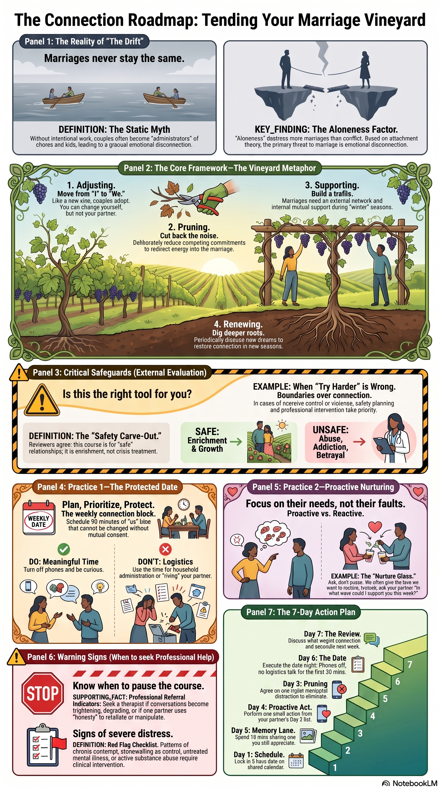
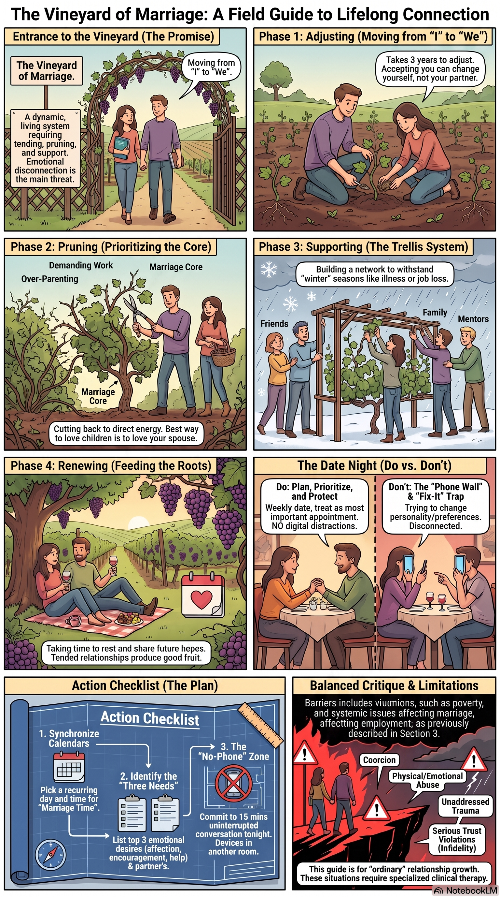

Opening
Why this matters now
This week you build one brick, not a cathedral. A strong marriage grows through protected attention and repeated habits — not one dramatic evening.
Your first assignment is not to grade your wife. It is to establish a rhythm she can reasonably expect: invite, listen, own one responsibility, act, return.
Her participation is invited, not demanded. If she declines today, you can still schedule the rhythm, write honest answers yourself, and complete a no-strings-attached act of care.
Scripture anchor
Ground your work in Scripture
Read each passage in its wider context before applying it.
Matthew 7:24–27
Jesus connects hearing with doing. Obedient discipleship is not a guarantee that a faithful husband controls every outcome.
Ephesians 5:21, 25–33
Mutual submission and a husband's self-giving love belong together. Headship language must never authorize coercion, entitlement, or concealment of harm.
James 1:19–22
Quick listening and practiced obedience expose the gap between religious speech and embodied faithfulness.
This week
Your tasks
Work through these in order. Each task has an observable finish line.
Task 1
Schedule the check-in
Twenty uninterrupted minutes. Not a performance review.
Actions
- Ask: "I want to protect twenty minutes for us each week — not to grade our marriage, just to stay connected. Would [day/time] work?"
- Choose a quiet, neutral setting. Do not begin in bed, late at night, during a rushed transition, or when either of you is already upset.
- Put the time on your calendar only after she agrees — or after you have made a respectful invitation she may decline without penalty.
Task 2
Prepare three questions
Actions
- Write: "What felt good between us this week?"
- Write: "What felt heavy?"
- Write: "What is one small thing I could do that would help?"
- Do not prepare a defense, a correction script, or a list of complaints for her.
Task 3
Complete the first check-in
Actions
- Put phones away. Keep the meeting to twenty minutes unless she freely wants more.
- Listen without correcting her memory or explaining your intent.
- Share one pressure of your own without making her responsible to fix it.
- End on time. A trustworthy rhythm respects the boundary it promises.
Task 4
Act before the next check-in
Actions
- Complete one reasonable act of care connected to what you heard.
- Do it without announcing points, expecting praise, or requiring reciprocity.
- Write no private report about her answers. Store no sensitive details in this course.
Task 5
Protect the rhythm
Actions
- Put the next check-in on the calendar before the first one ends.
- If the first time did not work, repair the miss and choose another time — do not quit because it felt awkward.
- Do not turn consistency into surveillance. A check-in is not a performance review or evidence that you are now entitled to praise.
Private self-check
Reflect alone. Do not use these to diagnose or score your wife.
- Does my wife receive protected attention, or only what remains after everything else?
- When she names a need, do I get curious or begin proving my intent?
- What promise have my repeated habits contradicted?
- Am I pursuing connection calmly, or seeking reassurance that I am a good husband?
Required field action
Establish your weekly 20-minute marriage check-in
- Ask for a mutually workable time in a neutral setting.
- Complete the first check-in using your three questions.
- Choose one action you personally own before the next meeting.
- Schedule the next check-in before this one ends.
Observable finish line: The next check-in is on the calendar, the first check-in occurred, and you completed one small act of care based on what you heard — whether or not she participated.
Optional conversation guide
Invite; do not assign. Your wife may decline, stop, or suggest another format without penalty.
- What would make a weekly check-in feel useful rather than burdensome?
- What helped you feel connected to me this week?
- What is one small pressure I could help carry?
- What one action would be most useful for me to own before we talk again?
Read before you proceed
Relationship habits help basically safe couples; they do not repair violence, coercive control, active betrayal, or addiction by themselves. A husband's initiative is not authority to compel participation. If there is fear, coercion, violence, or immediate danger, seek confidential individual help first — not a joint exercise.
Support and safety
This course is formation for a basically safe marriage. It is not crisis care, clinical treatment, or a substitute for qualified pastoral counsel.
Immediate danger
Call or text 911 in the United States, or your local emergency service.
Abuse or coercive control
Seek confidential individual safety planning. Joint exercises are not automatically appropriate when control or fear is present.
Betrayal, addiction, or trauma
A licensed clinician with relevant specialisation. Trained pastoral care supports that work; it does not replace it.
Never use Scripture, headship, money, children, or course completion to demand access, silence concern, or prevent help.
Resource room
Study aids
Optional study aids from your Notebook by Gemini notebook. Listen, watch, read, or drill — then return to your field action.
Watch
Short video overviews.
Listen
Audio briefings for deeper reflection.
Slide decks
PDF study decks.
Marital Maintenance Playbook
Open slide deckMaintenance habits and seasons.
Tending the Marital Vineyard
Open slide deckThe four vineyard tasks.
Field graphics
Single-page visual summaries.
Field graphics
Marriage Connection Roadmap
View graphic{kind=link}

Visual roadmap of connection habits.
Field graphics
Marriage Vineyard Field Guide
View graphic{kind=link}

Single-page field guide on adjusting, pruning, supporting, and renewing.
Read
Markdown study aids.
Read
Building Strong Foundations
Read the reportExecutive briefing on foundation habits.
Read
From We to Me: Navigating the Seasons of Connection
Read the reportSeasons-of-life framing.
Read
The Vineyard Secret: Five Surprising Lessons
Read the reportPopular-article register — use as prompt, not proof.
Drill
Interactive knowledge check.
Drill
Marriage Quiz
Open the quizKnowledge check over Module 1 material.
Your Notebook by Gemini notebook
Google account required. This is the source for all study aids below.
Open "TMC (pt1): Building Strong Connections" in Notebook by GeminiOptional companion journal
Optional written exercises. This module works without it.
The Marriage Course Study JournalAffiliate disclosure: Amazon Associates link. As an Amazon Associate I earn from qualifying purchases, at no extra cost to you.
Knowledge check
Complete the quiz after working through the module tasks and field action.
Quiz
Complete module 1
Mark complete only after the field-action finish line. You can change this later.